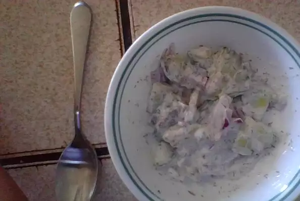

Go to:Home
Go to:Black Tea Lemonade
Cucumber Salad

Description
This is a black Tea Lemonades
It is delicious.
Ingredients
- ½ cup reduced-fat sour cream (such as Daisy®).
- 2 tablespoons fresh lemon juice.
- 2 tablespoons chopped fresh dill.
- 3 cucumbers, halved lengthwise and thinly sliced crosswise.
- ½ cup thinly sliced red onion.
- coarse salt and ground black pepper to taste.
Steps
- Mix sour cream, lemon juice, and dill together in a bowl.
- Add cucumbers and onion.
- Stir to combine.
- Season with salt and black pepper.